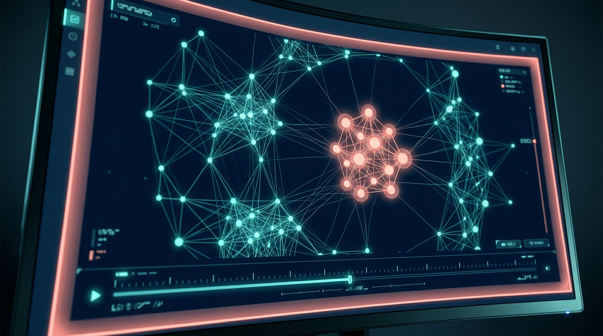

RootSignal
Catch the origin before the pile-on—see if the spike looks organic or engineered.
Project overview
Motivation. The same claim can explode across forums, short video, and quote posts in hours—sometimes because communities genuinely care, and sometimes because coordinated accounts, templates, or incentive structures amplify it inorganically. We want to study discourse emergence: where a topic first takes shape, how it jumps between communities, and whether the spike carries structural signatures of coordination (synchronized posting, bridge patterns, copy-paste bursts) rather than only measuring popularity. We treat “who is bad” as out of scope; our output is evidence-backed risk signals and provenance-style traces that humans can interpret.
User and research value. Researchers, journalists, and platform-integrity-minded teams gain a calmer workflow that separates attention from organic-looking spread, highlights benign alternative explanations (breaking news relays, fandom mobilization), and exports audit-friendly summaries. Business value lies in faster prioritization for investigation and clearer communication of uncertainty—framed as coordination-amplification risk, not courtroom verdicts.
Components we will build. (1) Ethical ingestion of public posts and metadata into a hosted database with snapshots for replay; (2) clustering and graph features that estimate earliest detectable roots, cross-platform linkage, and time-stacked similarity; (3) a React console with timeline scrubbers, subgraph views, and filters by topic or region; (4) retrieval-augmented (RAG) explanations grounded in retrieved posts; (5) PydanticAI agents that emit schema-locked objects—e.g., emergence trace + coordination-risk factors + caveats—with optional web search and code-backed checks for baselines and plots. Course-aligned media (AI voice, image assets, reel assembly) will support demos; evaluation will compare our flags to simple keyword alerts and document failure modes (organic events that look coordinated).
Team
The Provenance Lab
| First name | Last name | SIS ID | |
|---|---|---|---|
| Kenza | Moussaoui Rahali | kenza.moussaoui@university.edu | KM2774 |
Hype reel storyboard (~30s, vertical)
| Image | Scene description | Narration |
|---|---|---|
| Hook — medium. Vertical phone frame: rapid cuts of the same headline in different apps; whip-pan to a single glowing “root” node on a dark map. High energy, shallow depth of field, safe margins for TikTok UI chrome. | “Everyone’s talking overnight—but who lit the match?” | |
 |
Close-up UI. Analyst screen: diffusion timeline scrubber, bridge edges lighting up, a “coordination-style burst” band (synchronized posts) pulsing—not red-alert chaos, crisp data viz. Finger drags time; subgraph highlights. | “RootSignal traces emergence—and separates organic buzz from campaign-shaped spikes.” |
| Hero medium. Presenter in soft rim light; end card shows RootSignal logo plus tagline “Evidence, not verdicts.” Vertical 9:16; confident but serious tone (integrity tool, not gossip). | “Ground your final project in graphs, citations, and grown-up uncertainty—Generative AI & Social Media.” |